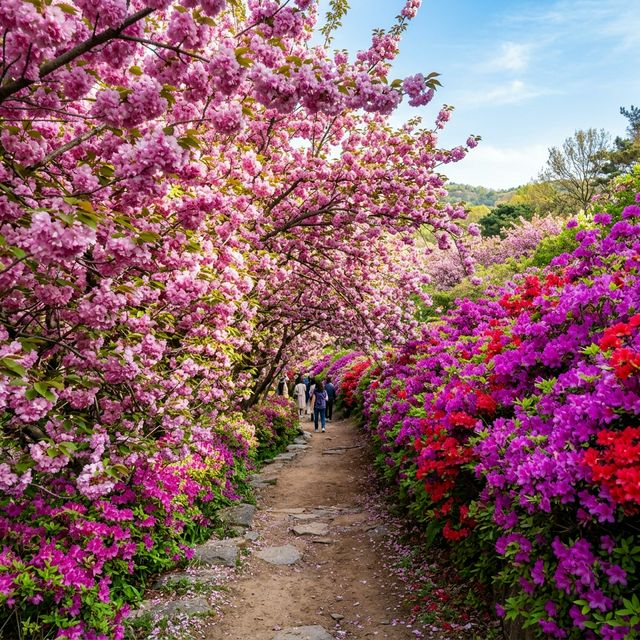
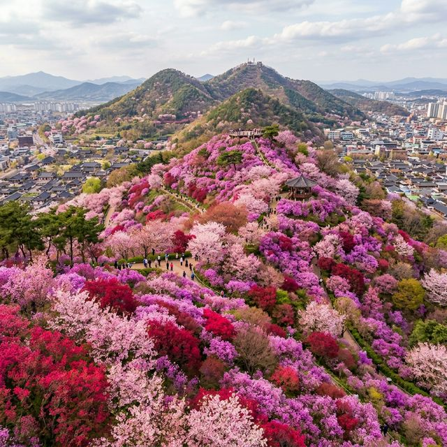
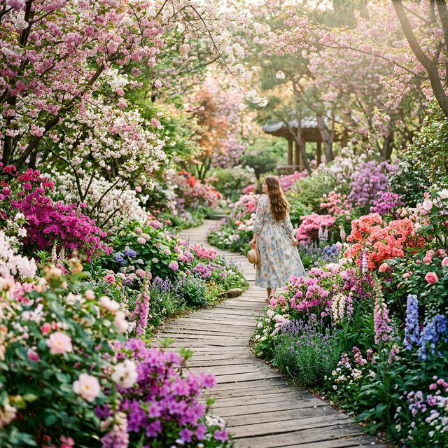

전주 완산칠봉 꽃동산 겹벚꽃 & 철쭉 — 4월 전주 여행의 하이라이트, 인생샷 명당 가이드
🌈 컬러풀 파라다이스: 완산칠봉 꽃동산은 진분홍빛 겹벚꽃과 자홍빛 철쭉이 산 전체를 뒤덮어, 마치 거대한 꽃
대궐에 들어온 듯한 황홀한 풍경을 선사합니다.
📍 접근성: 전주 한옥마을과 도보권에 위치해 있어 투비 투어 코스로 최적이지만, 입구 경사가 가파르니 편한 신발은 필수입니다.
✅ 방문 시기: 2026년 4월 셋째 주(4.15~21)가 겹벚꽃과 철쭉이 동시에 만개하는 황금기로 예상됩니다.
맛의 고장 전주가 4월이면 '꽃의 고장'으로 변신합니다. 전주 한옥마을 건너편, 완산구청 뒤쪽으로 이어지는 완산칠봉(完山七峰) 꽃동산은 전국에서도 손꼽히는 봄꽃 명소인데요.
이곳은 원래 한 시민분이 수십 년간 정성을 다해 가꾼 개인 정원이었으나, 전주시에서 기증받아 지금은 모든 시민과 관광객이 즐길 수 있는 꽃동산이 되었습니다. 왕벚꽃보다 훨씬 풍성하고 진한 색감을
자랑하는 겹벚꽃과 산 전체를 타오르듯 붉게 물들이는 철쭉의 조화! 4월 전주 여행에서 반드시 가봐야 할 완산칠봉 꽃동산의 생생한 풍경을
전해드립니다.

머리 위로는 분홍색 겹벚꽃이, 발밑으로는 붉은 철쭉이 만개한 완산칠봉의 꽃터널. (AI 제작 이미지)
1. 완산칠봉 꽃동산, 왜 특별할까?
완산칠봉의 가장 큰 매력은 색깔의 대비입니다. 하늘하늘한 연분홍 왕벚꽃과는 달리, 이곳의 겹벚꽃은 주먹만한 크기의 꽃송이들이 뭉쳐져 있어 훨씬 강렬한 인상을 줍니다. 여기에
자홍색, 진핑크, 연분홍 등 다양한 색상의 철쭉까지 가세하여 보는 이의 시각을 압도합니다. 사방이 꽃으로 둘러싸여 있어 카메라만 들면 인생 사진이 나오는 이곳은, 벚꽃 엔딩 이후 가장 화려한 봄을
만끽할 수 있는 대한민국 대표 꽃동산입니다.
2. 2026년 전주 꽃동산 만개 상황 및 코스 안내
올해는 4월 초 고온 현상으로 인해 철쭉의 개화가 예년보다 빠릅니다. 2026년 4월 12일 기준, 철쭉은 약 40% 이상 개화했으며 겹벚꽃은 이제 막 팝콘을 터뜨리기 시작했습니다. 두 꽃이 조화를
이루는 최적의 관람일은 4월 16일(목) ~ 4월 19일(일) 사이가 될 것으로 보입니다. 완산칠봉을 오르는 길은 여러 갈래가 있지만, 완산공원
입구(남부시장 인근)에서 시작해 데크 산책로를 따라 오르는 코스가 가장 무난하며 풍경도 아름답습니다.
👣 완산칠봉 꽃동산 완벽 관람 동선
1
전주 남부시장 주차: 꽃동산 주변은 주차가 거의 불가능합니다. 남부시장 천변 주차장을 추천합니다.
2
곤지산 투구봉 방면: 꽃들이 밀집된 메인 구역입니다. 이곳에서 가장 화려한 겹벚꽃 터널을 만날 수 있습니다.
3
한옥마을 전망대: 꽃동산 위쪽에서 전주 한옥마을 전체를 내려다보는 뷰포인트는 필수 코스입니다.

산 전체가 꽃으로 뒤덮힌 완산칠봉만의 압도적인 핑크빛 물결. (AI 제작 이미지)
3. 실패 없는 사진 촬영 Tip
사람이 워낙 많은 곳이라 배경에 사람을 지우는 것이 핵심입니다. 하지만 완산칠봉만의 특징을 잘 살리면 멋진 사진을 남길 수 있습니다.
- 로우 앵글 활용: 낮은 쪽에는 철쭉이, 위쪽에는 겹벚꽃이 있으므로 카메라를 낮게 위치시켜 두 꽃을 한 프레임에 꽉 채워보세요.
- 나무 그늘을 액자처럼: 겹벚꽃 나무 아래서 멀리 보이는 정자나 한옥 기와지붕을 배경으로 찍으면 한국적인 미가 돋보입니다.
- 오전 10시 이전 방문: 빛이 부드럽고 인파가 그나마 적은 시간대입니다. 특히 주말이라면 아침 8시 방문이 가장 여유롭습니다.
| 구분 |
상세 가이드 |
꿀팁 |
| 입장료 |
무료 |
연중무휴 상시 개방 |
| 소요 시간 |
약 1시간 ~ 1시간 30분 |
사진 촬영 포함 시간 |
| 준비물 |
물, 편한 운동화 |
오르막 경사가 꽤 있음 |

꽃들에 파묻힌 듯한 기분을 느낄 수 있는 환상적인 산책 데크길. (AI 제작 이미지)
4. 전주 여행 백배 즐기기: 함께 가면 좋은 곳
꽃구경 전후로 들르기 좋은 전주의 핫플레이스입니다.
- 전주 남부시장 청년몰: 꽃동산 하산 후 시장에서 콩나물국밥으로 속을 달래고 디자인 소품들을 구경하기 좋습니다.
- 전주 향교: '구르미 그린 달빛' 촬영지로 유명한 이곳은 겹벚꽃은 없지만 고풍스러운 한옥과 거대한 은행나무 신록이 평화롭습니다.
- 남고산성 드라이브: 전주 시내를 한눈에 조망할 수 있는 드라이브 코스로 저녁 야경이 일품입니다.
💡 먹거리 강력 추천: 전주하면 역시 비빔밥이지만, 봄철 완산칠봉 방문 후에는 비빔밥 와플이나 남부시장의
피순대 등 이색 로컬 푸드에 도전해 보세요!
5. 결론: 가장 늦게 찾아오는 전주의 화려한 봄
전국에 수많은 꽃구경 명소가 있지만, 전주 완산칠봉 꽃동산만큼 밀도 높고 선명한 색채를 보여주는 곳은 드뭅니다. 왕벚꽃의 연한 아쉬움을 뒤로하고, 한층 더 성숙하고 화려한
봄을 맞이하고 싶은 분들이라면 이번 4월 셋째 주말, 전주로 향해 보시기 바랍니다. 머리 위로는 겹벚꽃이, 발아래로는 철쭉이 춤추는 이 환상적인 꽃동산에서 여러분의
2026년 봄날은 가장 화려하게 기록될 것입니다.
본 기사는 2026년 4월 12일 실시간 개화 상황을 바탕으로 작성되었습니다. 주말에는 극심한 정체가 예상되므로 대중교통 이용을 적극 권장하며, 모두를 위해 쓰레기는 반드시 다시 가져가는 성숙한 여행
에티켓 부탁드립니다.
#전주가볼만한곳
#완산칠봉꽃동산
#전주겹벚꽃명소
#완산공원철쭉
#전주한옥마을코스
#전주여행추천
#4월꽃구경
#인생사진명소
#전주남부시장맛집
#철쭉축제실시간